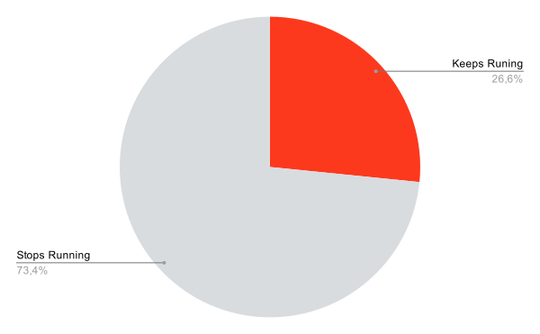
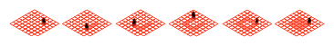

Project Group 9, Software Engineering Lab
René Van Der Schueren, Bavo Verstraeten, Aaron Vranken, Elias Nijs
Wij vroegen we ons af: hoe kunnen wij gezond en sportief blijven, meer specifiek de ervaring lopen verbeteren. Onderzoek toont aan dat ¾de van de mensen die begint met lopen binnen de 2 maanden stopt. Lopen of wandelen is voor veel mensen geen ontspanning maar een klus, dat is ontmoedigend. We vroegen ons dus af: kunnen we een app ontwikkelen die beginnende lopers en wandelaars gemotiveerd houdt en misschien zelfs doet genieten van hun nieuwe sport. Hiervoor ontworpen wij Squared2.
In het kort is Squared een spel waarbij lopen beloond wordt, maar op een speelse manier. Je verovert namelijk een vakje door er op te staan, en je verovert een groter gebied door hier een lus rond te lopen. Dit hebben we gecreëerd met zuivere, onderhouden code, een simpele, gebruiksvriendelijke interface en snelle, goed geteste algoritmes.
Squared2 omvat een uitgebreide backend en frontend.
De frontend volgt een MVVM architectuur waarbij wij gebruik maken van Jetpack Compose in Kotlin. Wij kozen dit framework omdat het de ontwikkeling van reactieve UI versimpelt en zo het development proces versnelt.
De backend werkt met Fastify—een framework dat heel gelijkaardig werkt aan Express.js, maar aanzienlijk minder overhead heeft per request. Intern delen wij de wereldkaart op in vakjes die er als volgt uitzien:
Elk vakje is 0.0001 lengtegraad hoog en 0.0001 breedtegraad breed. Om deze efficiënt op te slaan werken we met een ID systeem. De ID van een tile kan ontleed worden in twee onderdelen waarvan het eerste de breedtegraad encodeert en het tweede de lengtegraad.
Voor cykel herkenning gebruiken wij het Union-find algoritme. Nieuwe tegels krijgen een eiland-ID. Wanneer twee eilanden van dezelfde kleur verbonden worden, krijgen ze hetzelfde eiland-ID. Wanneer twee tegels van hetzelfde eiland verbonden worden is er mogelijk een lus gevormd. Het algortime past dan een flood fill algoritme toe om het omcirkelde gebied in te kleuren.
Squared2 bestaat uit 4 schermen: een titelscherm, een teamselectiescherm, een instellingenscherm en het spelscherm.
Op het titelscherm heeft de gebruiker de kans om zijn naam in te vullen, naar het teamselectiescherm te gaan of naar het instellingenscherm te gaan. Op het teamselectiescherm kan de speler makkelijk een kleur kiezen dat zijn team voorstelt in het spel. Op het instellingenscherm kan de gebruiker het geluidsniveau van zowel de muziek als de geluidseffecten aanpassen.
Het belangrijkste scherm, het scherm waarop het spel effectief gespeeld wordt, bestaat uit een toolbar onderaan en een grote wereldkaart. Op deze kaart kan men de verschillende vakjes zien, elk ingekleurd in de kleur van een overeenstemmend team. Door rond te lopen kan de speler een vakje veroveren en zo het gebied van zijn team uitbreiden. Om het spel interessanter en spannender te maken, is er nog een bijkomende mechanisme. Indien een speler een lus van vakjes vormt, zullen alle vakjes binnen de lus ook veroverd worden. Op de toolbar onderaan het spelscherm kan de speler de opties vinden om: de vakjes onzichtbaar te maken, het scherm te centreren op zijn locatie, het scherm te draaien richting het noorden, om naar het instellingenscherm te gaan en de optie om een leaderboard te openen. Op dit leaderboard kan de speler zijn totaal aantal veroverde vakjes zien alsook het aantal vakjes van alle teams zien.
Ondertussen hebben we na maanden werk een volledig werkende app gemaakt. We hebben alles toegevoegd wat we wilden toevoegen, rekening houdende met goede codeerstijl. Bij elke regel code hebben we zo goed mogelijk conventies proberen hanteren, wat leidde tot propere, overzichtelijke en ook snelle code. Hierdoor is de app klaar om de wereld in gestuurd te worden! We overwegen namelijk de app op de Google Play store te plaatsen, om het spel spelen makkelijker dan ooit te maken!
Deze app belooft vele uren plezier, allemaal terwijl je aan het sporten bent, of alleszins terwijl je buiten komt. We hopen dat jullie het spel gaan spelen, een goede tijd hebben, veel vrienden maken, en een goede conditie behalen.
De app is uitbundig getest, maar dat wil niet zeggen dat het onmogelijk is dat we iets over het hoofd hebben gezien. Aarzel dus zeker niet om feedback te geven indien jullie problemen vinden. Dat is echter niet de enige feedback die welkom is! Voel je ook welkom om al je opmerkingen, verbeteringen of bedenkingen met ons te delen.
Eindigend op die noot: Welke features zouden jullie graag toegevoegd zien in het spel?
Martin, R. C. (2009). Clean code: A handbook of agile software craftsmanship. Upper Saddle River, NJ: Prentice Hall.
Met veel dank aan alle professoren—Bart Dhoedt, Pieter Simoens, Christophe Scholliers, Pieter Van Molle—voor de uitstekende begeleiding tijdens het ontwikkelen van Squared2. In het bijzonder willen Professor Christophe Scholliers nog eens extra bedanken voor de persoonlijke begeleiding, die een zeer grote meerwaarde was. Daarnaast zouden we ook nog de mensen van group 10 willen bedanken—Matthias Van Eyck, Gerwoud Van den Eynden, Arnout Allaert, Alexandre Paice—voor het reviewen van onze app.